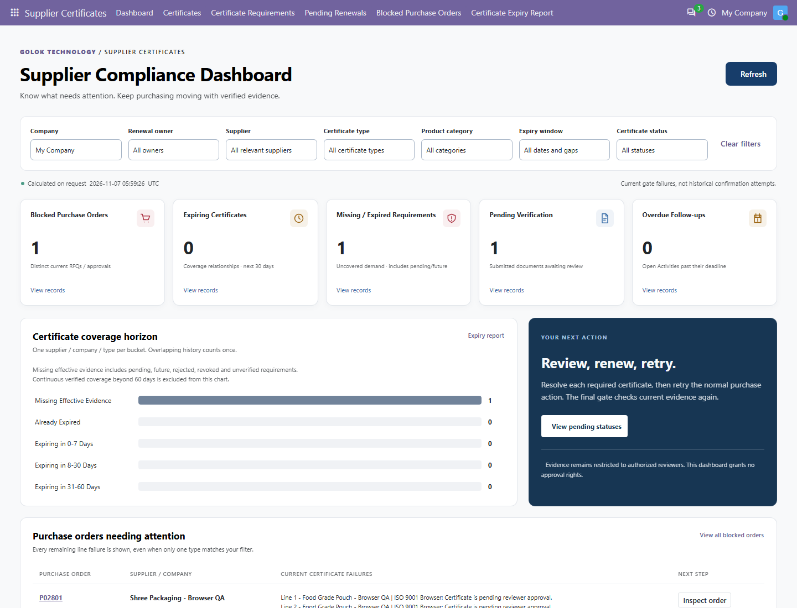
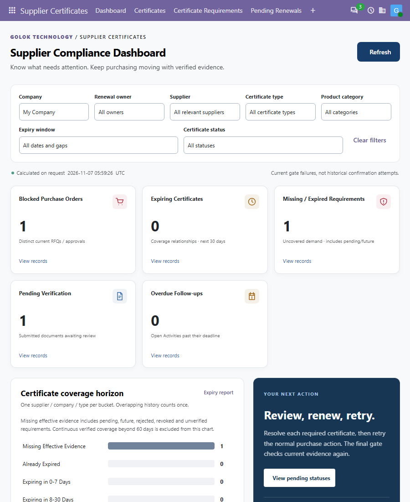
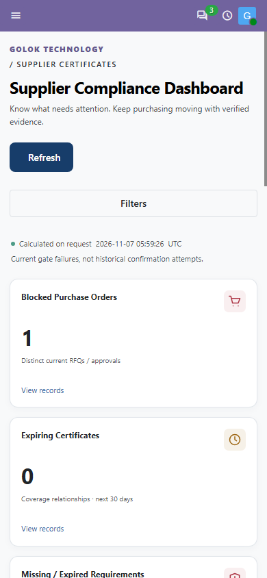

GOLOK TECHNOLOGY
Check company-specific supplier certificates before order confirmation and again at final manager approval. Give buyers clear line-level reasons and owners a focused renewal follow-up.
Odoo 20 Community · Purchasing controls · Golok Technology

Manual expiry tracking can leave buyers unsure which evidence applies. Configure certificate types by product category, review supplier evidence, then let the gate identify missing, expired, future-dated or unapproved certificates before purchase advances.
Company-specific category rules inherit from parent categories and deduplicate repeated types.
Restricted PDF evidence is reviewed by an authorized, independent reviewer. Approvals retain renewal history.
Confirmation and final approval recheck current evidence. Renewal never confirms a purchase order automatically.
Review blocked orders, upcoming coverage expiry, uncovered purchasing requirements, pending verification and overdue follow-ups. Filters and drill-downs use authorized company data. Counts refresh on request.


For example, a food-packaging category may require Food Safety evidence inherited from a parent packaging category. If that certificate is expired while an unrelated office-supply line has no requirement, the order explains only the failing packaging line and holds the whole order until requirements pass.
Useful for food packaging, certified raw materials and industrial suppliers. Your organization defines certificate rules and authorized reviewers assess documents; the app does not certify regulatory authenticity.
Certificate metadata is company-specific. Confidential evidence is restricted to authorized reviewers; buyers can see permitted status and blocking reasons. Native purchase permissions remain in force. Expiry after confirmation does not automatically cancel an existing confirmed order. The module checks configured requirements and dates; customers remain responsible for applicable legal and regulatory obligations.
No. A separately authorized reviewer must approve it.
No. It rechecks relevant orders; a buyer or manager retries through normal Odoo Purchase actions.
The supported target is Odoo 20 Community. Supplier portals and automatic regulatory verification are not included.
No. Evidence and requirements are evaluated for the purchase order's company.
Golok Technology · Support: patelyash.gokul@gmail.com